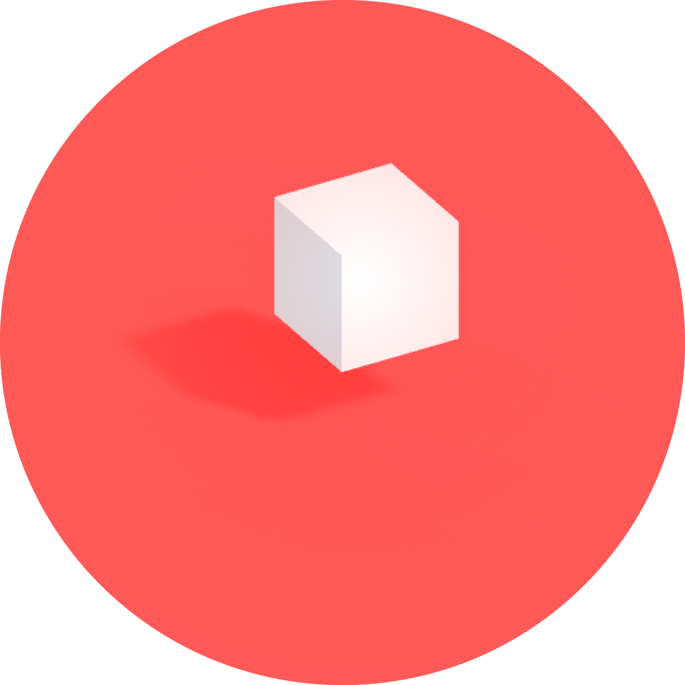
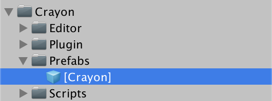
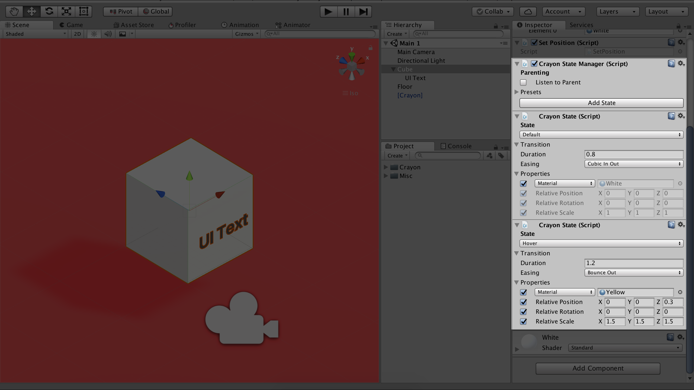

Crayon is a lightweight, open source 3D UI prototyping toolkit for Unity. It was made for 3D UI designers who prefer working with GameObjects and TextMeshes over the 2D-oriented Unity GUI Canvas system.
1. Drag the Crayon prefab into your scene.
2. Include the Crayon namespace in your C# code.
using Crayon;Crayon contains several extension methods for the GameObject class, so you don't need to constantly call the Crayon namespace.
Crayon makes it easier to set states and transitions for the following properties on any GameObject:
Complex shaders can make opacity a pain, but Crayon makes it easy. It doesn't matter if your gameObject is text, sprite, or mesh... Crayon will figure that out for you. Fades are applied to all children automatically, so you don't have to worry about looping over nested child objects.
// Fade in over 800ms
gameObject.FadeIn(0.8f);// Fade with easing
gameObject.FadeIn(0.8f, Easing.Linear);// Instantiate a new GameObject and fade it in
gameObject.FadeInNew(0.8f);// Fade Out
gameObject.FadeOut(0.8f);// Fade Out and Destroy
gameObject.FadeOut(0.8f, true);Crayon gives you simple functions for tweening common properties like color, position, rotation, size, and opacity.
// Set color without tweening
Color32 red = new Color32(255, 0, 0, 255);
gameObject.SetColor(red);// Tween to red over 800ms
gameObject.SetColor(red, 0.8f);// Tween to hex color -
// Crayon will automatically convert to RGBA
gameObject.SetColor("#FF0000", 0.8f);// Tween to 20% opacity over 800ms
gameObject.SetOpacity(0.2f, 0.8f);// Tween position to an absolute position in world space
gameObject.SetPosition(new Vector3(9.0f, 9.0f, 9.0f), 0.8f);// Tween position, relative to current localPosition
gameObject.SetRelativePosition(new Vector3(0.0f, 1.0f, 0.0f), 0.8f);// Tween to rotation
gameObject.SetRotation(new Vector3(9.0f, 9.0f, 9.0f), 0.8f, Easing.Cubic);// Tween to rotation
gameObject.SetPosition(new Vector3(2.0f, 0.0f, 0.0f), 1.2f,
Easing.Custom, "0.34,0.89,0.71,-0.33");Crayon also provides Editor components that make it easy to quickly define GameObject properties for common states like hover, selected, and default. The component also lets you define custom states that might be relevant to your own app.
// (Your own interaction method)
private void OnFocus() {
// Switch to hover state
gameObject.SetState(hover);
}// (Your own interaction method)
private void OnLightsDown() {
// Switch to a custom state
gameObject.SetState("LightsDown");
}If you've tried Crayon, I'd love to know how you think it could be better.
Suggest a feature